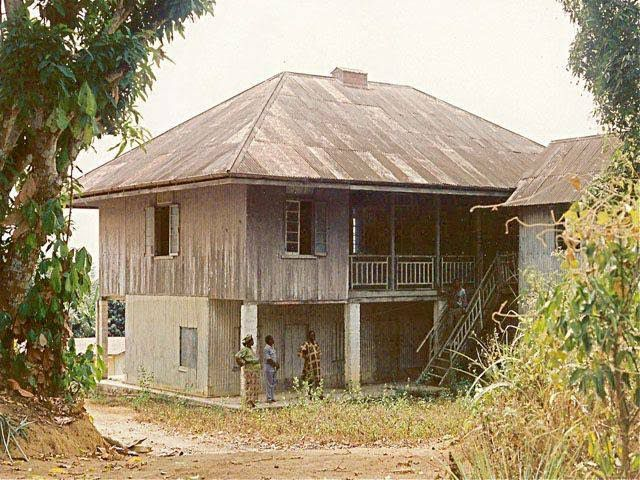
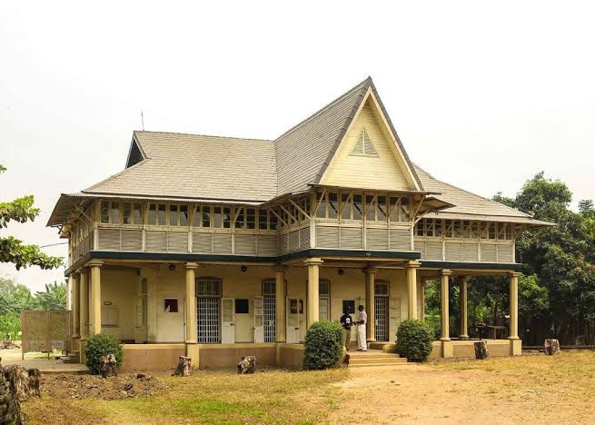
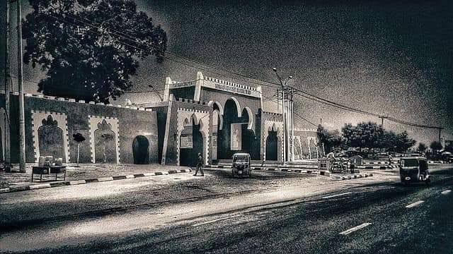

By BuyLetLive / December 13, 2023
Histories of world nations are not always documented in writings, sometimes, history lay bare in buildings for the senses to feel and the eyes to soak in their unique and beautiful sights. Nigeria, a nation indisputably rich in culture, has no shortage of such historical buildings in Nigeria and landmarks. Some of these buildings have a colonial touch, while others were built in pre-colonial times. Here is a look at five historic buildings in Nigeria that are significant for different reasons and worth knowing about.
Built in the late 19th century, the Mary Slessor building is one of the monuments in memory of Mary Mitchell Slessor (2 December 1848–13 January 1915), who was a Scottish missionary sent by the United Presbyterian Church to Nigeria. This modest-looking building, with its thatched roof and aesthetic structure, once housed the iconic Scottish missionary best known for stopping the killing of twins in Calabar. Rather than choose to dwell among her colleagues in the missionary quarters, Mary Mitchell Slessor opted to live among the Calabar people. The outcome of that brave decision is the Mary Slessor House in Ekenge, Calabar, which stands today as a testament to her selfless service and courage.
Jaekel House is one of the oldest buildings located within the Nigerian Railway Compound in Lagos, it was built in 1900 and is regarded as a fine example of colonial-style tropical architecture. In a dilapidated state for years, the restoration of the building and extensive garden was completed in 2010 with an upper-floor Mini Museum. The place is now functioning as a railway museum.

The foundation of this building was laid in 1842 while the house was
completed in 1845. The one-storey building has a corrugated iron
sheet roof overlooking the marina waterfront. It is the most popular
mission house in Badagry because the first sets of missionaries in
Nigeria settled at the building. The house has six large rooms, four
stores, two large sitting rooms, and a safe where precious items are
kept.
History also has it that it was a place where returnee slaves
lodged, one of which was Samuel Ajayi Crowther. This edifice was
built by Reverend Henry Townsend of the Anglican Church Mission
Society (CMS).
The city walls of ancient Kano served solely as a defensive structure to protect the inhabitants of the city against sieges and external attacks. Sakri Gijimasu, the 3rd Emir of Kano laid its foundations in the 11th century (1095 AD), while the walls are recorded to have been completed sometime in the middle of the 14th century. To this day, this wall still attracts tourists from across the globe.

Built in 1985, this structure is significant for housing weapons
that were used in one of Nigeria’s most defining moments. It has
three galleries that cover traditional warfare, the armed forces,
and the Nigerian Civil War weapon galleries. The museum has a
collection of objects from traditional and modern warfare. There are
also outdoor displays of warships, military aircraft, armored tanks,
and “Ogbunigwe” (bombs produced locally by Biafra during the
Nigerian Civil War).
Architectural designs are some of the attractions that draw tourists
into a country, and one peculiar thing about them is that they speak
about the time they were built. There are obviously more than five
historical buildings in Nigeria that hold significant cultural and
national values, however, the five highlighted in this article have
over the years proven to represent the very values that we stand for
as a people and a nation. While they continue to need improvement
from the government and private sectors, they still manage to draw a
fair tourist attraction from within and outside Nigeria.